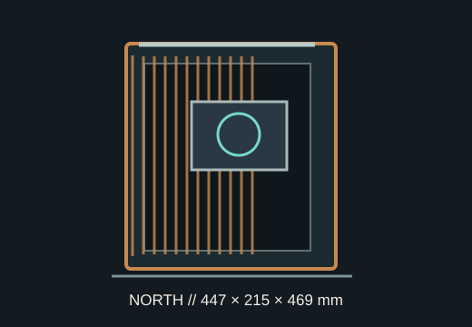

[ MODEL IDENTIFICATION // FRACTAL DESIGN NORTH ]
Fractal Design North
The original North ATX mid-tower is 447 × 215 × 469 mm, accepts a 355 mm GPU in its standard front-fan layout and allows 360 mm front radiators.

VARIANT NOTE: This record describes the standard Fractal North, not North XL or North XL Mesh; GPU and cooler clearances differ from those larger models.
Dimensions & fit specifications
| External dimensions | 447 × 215 × 469 mm (L × W × H); volume 42 L; net weight 7.6 kg. |
|---|---|
| Motherboards | ATX, microATX and Mini-ITX; conventional board orientation only. |
| GPU / CPU cooler / PSU | GPU length 355 mm, reduced to 300 mm with a 360 mm front radiator; CPU cooler height 170 mm. PSU length and cable route depend on installed drive cage. |
| Radiators | Front: up to 360 mm; top: up to 240 mm; rear: up to 120 mm. Top fit depends on memory height and installed motherboard heatsinks. |
| Drive mounts | Two 2.5/3.5-inch combination positions under the PSU shroud plus two dedicated 2.5-inch mounts behind the motherboard tray. |
| External configuration | Mesh or tempered-glass side-panel variant; mesh SKU has additional front-radiator constraints. Verify exact panel/SKU when applying variant-specific GPU data. |
Compatibility & preservation
Fractal specifies two GPU limits for a reason: fitting a 360 mm front radiator cuts the North's maximum GPU length from 355 to 300 mm. The top 240 mm radiator also competes with motherboard and memory height. Check the manual's precise radiator, fan and cable placement for the individual side-panel revision.
- Protect the slatted front panel and preserve its fan bracket, filters, drive trays and removable top panel.
- Check the GPU's full body length and power connector clearance, not only the card's advertised PCB length.
- Keep the SKU with the record: mesh and glass panel versions can differ in front cooling configuration.
Manufacturer sources
- Fractal Design — North product specificationsManufacturer dimensions, board fit, GPU/cooler limits, drive support and variant details.
- Fractal Design — North installation manual (PDF)Official assembly, radiator and storage installation instructions.